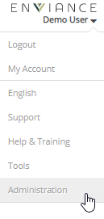
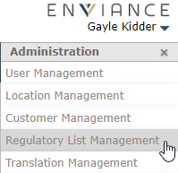
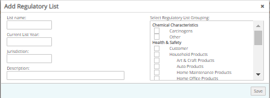
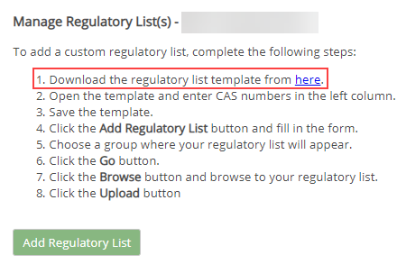
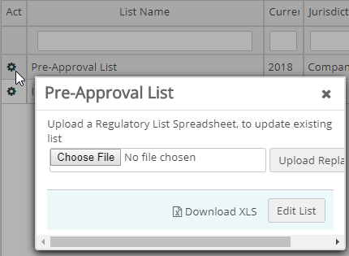
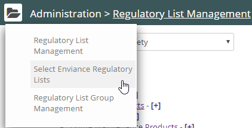
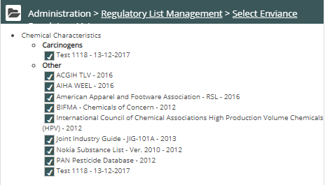

Many regulatory lists, both regional and global, are maintained in the system and are available. You can choose a regulatory list in the system, or you can add your own list(s) in .xls format. When you run a regulatory analysis report, Vault checks whether any of the chemicals at the location appear on the regulatory list(s) you specify.
Note: If you upload your own regulatory list, the list must contain only CAS numbers. To include more information, contact your customer service representative.
To add a custom regulatory list:
Click the dropdown arrow next to your name. Select Administration from the menu.

From the Administration window, select Regulatory List Management.

From the customer list, select the customer for whom you want to create a list.
The Regulatory List Management page displays.
Creating a custom regulatory list: Instructions are provided on the page for creating a custom regulatory list. You must first download the regulatory list template from the link provided, fill the template by adding the CAS numbers of the chemicals for the list in the first column of the template. You are then ready to create your regulatory list in the system.
To add a custom regulatory list:
Click Add a Regulatory List.

Click Save.
Your regulatory list now appears on the Manage Regulatory Lists page.
Select the link to Download a Regulatory List Template link (in Step 1 of instructions on page).

Save the file to your computer.
Open the template and enter the CAS Numbers of the chemicals to add to the list.
When you are ready to upload the list, click the icon in the Action column for the regulatory list on the Regulatory List Manager page and click Choose File. Select the file from your computer.

To specify a regulatory list managed in the system:
Click Select Company Regulatory Lists.

The Managed Regulatory Lists page displays:

Check the regulatory lists you want to include.
Vault updates your location with the lists you specify.